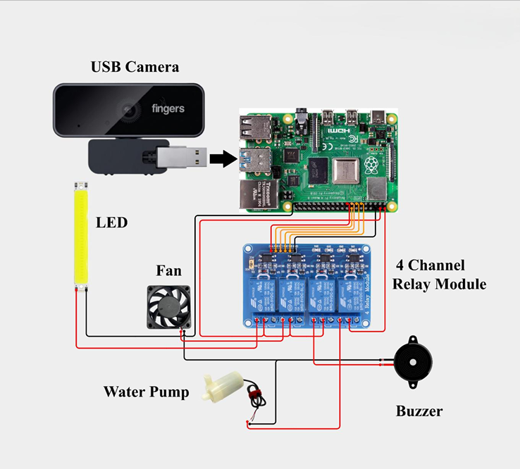

Project Details
Project Name: Smart Home Automation
Controller: Raspberry Pi
Input Device: USB Camera
Control Method: Hand Gesture Detection
Output Controller: 4-Channel Relay Module
Controlled Devices: LED, Fan, Water Pump and Buzzer
Programming Language: Python
Purpose: To control home appliances without touching physical switches by showing different hand gestures to a camera.
Required Components
 Raspberry Pi
Raspberry Pi
Main controller that processes the camera image.
 USB Camera
USB Camera
Captures the hand gestures of the user.
 4-Channel Relay
4-Channel Relay
Switches the connected devices ON and OFF.
 Jumper Wires
Jumper Wires
Connect the relay module to the Raspberry Pi.
 R-Pi Power Supply
R-Pi Power Supply
Provides stable power to the Raspberry Pi.
 5V Fan
5V Fan
Actuators.
 2 Leds
2 Leds
Actuators.
 Motor Pump
Motor Pump
Actuators.
Circuit Connections
| Component | Pin Name | Raspberry Pi Connection | Controlled Device |
|---|---|---|---|
| Relay Channel 1 | IN1 | GPIO 17 | LED |
| Relay Channel 2 | IN2 | GPIO 27 | Fan |
| Relay Channel 3 | IN3 | GPIO 22 | Water Pump |
| Relay Channel 4 | IN4 | GPIO 23 | Buzzer |
| Relay Module | VCC | 5V | Relay power |
| Relay Module | GND | GND | Common ground |
| USB Camera | USB | Raspberry Pi USB Port | Hand detection |
Circuit Diagram
The USB camera is connected directly to the Raspberry Pi. The Raspberry Pi controls four relay channels for the LED, fan, water pump and buzzer.

Smart Home Automation Circuit
Raspberry Pi with USB camera and 4-channel relay module.
Hand Gesture Controls
The camera detects the number of raised fingers. Each gesture controls one home appliance.
Device: LED
Device: Fan
Device: Water Pump
Device: Buzzer
All Devices OFF
Key: Q
Required Libraries
Step 1: Update Raspberry Pi and Install Build Packages
sudo apt update
sudo apt install -y build-essential libssl-dev zlib1g-dev \
libncurses5-dev libncursesw5-dev libreadline-dev libsqlite3-dev \
libgdbm-dev libdb5.3-dev libbz2-dev libexpat1-dev liblzma-dev tk-dev \
libffi-dev uuid-dev wgetStep 2: Download Python 3.10.13
cd /usr/src
sudo wget https://www.python.org/ftp/python/3.10.13/Python-3.10.13.tgz
sudo tar -xf Python-3.10.13.tgz
cd Python-3.10.13Step 3: Configure and Compile Python
sudo ./configure --enable-optimizations
sudo make -j4Step 4: Install Python 3.10
sudo make altinstallStep 5: Check Python Version
python3.10 --versionStep 6: Return to Home Directory
cdStep 7: Create Python Virtual Environment
python3.10 -m venv mp-envStep 8: Activate Virtual Environment
source mp-env/bin/activateStep 9: Install MediaPipe
pip install mediapipeStep 10: Install OpenCV
pip install opencv-python==4.7.0.72Step 11: Install TensorFlow Lite Runtime
pip install tflite-runtimeStep 12: Activate Virtual Environment Again
source mp-env/bin/activateStep 13: Install GPIO Zero
pip install gpiozeroStep 14: Install RPi.GPIO
pip install RPi.GPIOStep 15: Install Python PyAudio
sudo apt install python3-pyaudioStep 16: Install Speech Recognition
pip3 install SpeechRecognitionStep 17: Install PortAudio and PyAudio Packages
sudo apt install portaudio19-dev python3-pyaudio -yStep 18: Install SpeechRecognition and PyAudio
pip3 install SpeechRecognition pyaudioStep 19: Install FLAC
sudo apt install flac -yStep 20: Configure the Audio Card
sudo nano ~/.asoundrcPaste the following two lines inside the file:
defaults.pcm.card 1
defaults.ctl.card 1Step 21: Reboot Raspberry Pi
rebootRaspberry Pi Python Code
import time
import cv2
import RPi.GPIO as GPIO
from cvzone.HandTrackingModule import HandDetector
# -------------------------------
# GPIO pin configuration
# -------------------------------
RELAY_LED = 17
RELAY_FAN = 27
RELAY_PUMP = 22
RELAY_BUZZER = 23
RELAY_PINS = [
RELAY_LED,
RELAY_FAN,
RELAY_PUMP,
RELAY_BUZZER
]
# Most relay modules are active LOW.
RELAY_ON = GPIO.LOW
RELAY_OFF = GPIO.HIGH
# -------------------------------
# GPIO setup
# -------------------------------
GPIO.setmode(GPIO.BCM)
GPIO.setwarnings(False)
for relay_pin in RELAY_PINS:
GPIO.setup(relay_pin, GPIO.OUT)
GPIO.output(relay_pin, RELAY_OFF)
# -------------------------------
# Camera and hand detector
# -------------------------------
camera = cv2.VideoCapture(0)
camera.set(cv2.CAP_PROP_FRAME_WIDTH, 640)
camera.set(cv2.CAP_PROP_FRAME_HEIGHT, 480)
detector = HandDetector(
detectionCon=0.8,
maxHands=1
)
# Prevent repeated switching from every frame.
last_gesture = -1
last_action_time = 0
GESTURE_DELAY = 1.0
def set_relay(relay_pin, state):
"""
Turn a relay ON or OFF.
"""
if state:
GPIO.output(relay_pin, RELAY_ON)
else:
GPIO.output(relay_pin, RELAY_OFF)
def turn_all_off():
"""
Turn all connected devices OFF.
"""
for relay_pin in RELAY_PINS:
set_relay(relay_pin, False)
def toggle_relay(relay_pin):
"""
Toggle the selected relay state.
"""
current_state = GPIO.input(relay_pin)
if current_state == RELAY_OFF:
set_relay(relay_pin, True)
return "ON"
set_relay(relay_pin, False)
return "OFF"
def process_gesture(finger_count):
"""
Control devices according to the number
of detected fingers.
"""
if finger_count == 1:
state = toggle_relay(RELAY_LED)
return "LED " + state
if finger_count == 2:
state = toggle_relay(RELAY_FAN)
return "FAN " + state
if finger_count == 3:
state = toggle_relay(RELAY_PUMP)
return "WATER PUMP " + state
if finger_count == 4:
state = toggle_relay(RELAY_BUZZER)
return "BUZZER " + state
if finger_count == 5:
turn_all_off()
return "ALL DEVICES OFF"
return "SHOW 1 TO 5 FINGERS"
status_message = "System Ready"
try:
while True:
success, frame = camera.read()
if not success:
print("Camera frame could not be read.")
break
frame = cv2.flip(frame, 1)
hands, frame = detector.findHands(
frame,
draw=True
)
finger_count = 0
if hands:
hand = hands[0]
finger_list = detector.fingersUp(hand)
finger_count = finger_list.count(1)
current_time = time.time()
if (
finger_count != last_gesture
and current_time - last_action_time
>= GESTURE_DELAY
):
status_message = process_gesture(
finger_count
)
last_gesture = finger_count
last_action_time = current_time
else:
last_gesture = -1
cv2.rectangle(
frame,
(10, 10),
(630, 115),
(15, 23, 42),
-1
)
cv2.putText(
frame,
"SMART HOME AUTOMATION",
(25, 45),
cv2.FONT_HERSHEY_SIMPLEX,
0.8,
(255, 255, 255),
2
)
cv2.putText(
frame,
"Fingers: " + str(finger_count),
(25, 78),
cv2.FONT_HERSHEY_SIMPLEX,
0.7,
(0, 255, 255),
2
)
cv2.putText(
frame,
status_message,
(200, 78),
cv2.FONT_HERSHEY_SIMPLEX,
0.7,
(0, 255, 0),
2
)
cv2.putText(
frame,
"Press Q to exit",
(25, 105),
cv2.FONT_HERSHEY_SIMPLEX,
0.55,
(200, 220, 255),
1
)
cv2.imshow(
"Smart Home Automation",
frame
)
key = cv2.waitKey(1) & 0xFF
if key == ord("q"):
break
except KeyboardInterrupt:
print("Program stopped by user.")
finally:
turn_all_off()
camera.release()
cv2.destroyAllWindows()
GPIO.cleanup()
print("GPIO cleaned and all devices turned OFF.")Steps to Operate the Project
- Connect the relay module to the Raspberry Pi according to the connection table.
- Connect the USB camera to the Raspberry Pi.
- Connect the LED, fan, water pump and buzzer to their respective relay channels.
- Switch ON the Raspberry Pi and open the terminal.
- Install the required Python libraries.
- Save the Python program as smart_home.py.
- Open the terminal in the code folder.
- Run the program using: python3 smart_home.py
- Show one to four fingers to control the devices.
- Show five fingers to turn all devices OFF.
- Press the Q key to stop the program.
Common Problems and Solutions
| Problem | Possible Cause | Solution |
|---|---|---|
| Camera is not opening | Incorrect camera index | Change VideoCapture(0) to VideoCapture(1). |
| Relay is always ON | Relay is active LOW | Keep RELAY_ON as GPIO.LOW and RELAY_OFF as GPIO.HIGH. |
| Hand is not detected | Poor lighting | Improve lighting and keep the hand clearly visible. |
| Device switches repeatedly | Gesture is changing rapidly | Hold the hand steady and increase GESTURE_DELAY. |
| GPIO permission error | Insufficient permission | Run the code using sudo or verify Raspberry Pi GPIO permissions. |